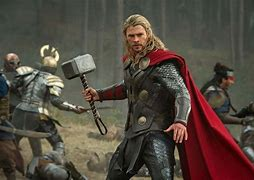
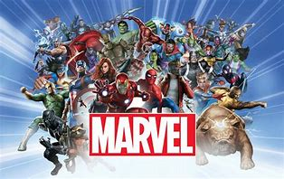
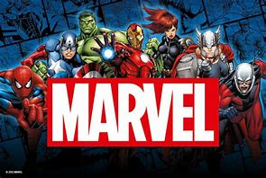
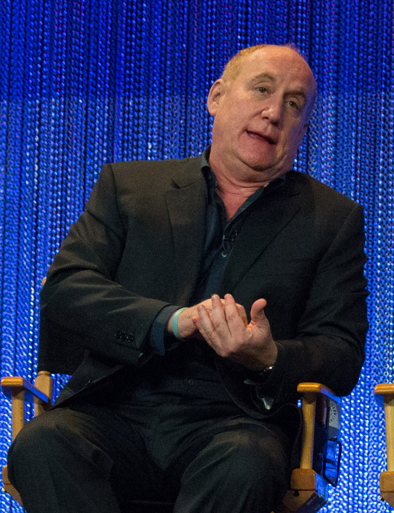

INFORMACION GENERAL
MARVEL MCU
Las películas del MCU se estrenan en grupos llamados "Fases", comenzando con la Fase Uno y Fase Dos.
En diciembre de 2009, The Walt Disney Company compró Marvel Entertainment por 4 mil millones de dólares. Disney dijo que las futuras
películas de Marvel Studios serían distribuidas por su propio estudio una vez que expirara el acuerdo existente con Paramount.
Las películas de Fase Tres se anunciaron en un evento de prensa especial en octubre de 2014. Para septiembre de 2015, después
de que Marvel Studios se integró a The Walt Disney Studios. Feige estaba rindiendo cuentas a Alan Horn, presidente de dicha división,
en vez de a Isaac Perlmutter, director de ejecutivo de Marvel Entertainment,y el comité creativo comenzó a tener sólo aportaciones
"nominales" sobre las películas. Continuaron consultando sobre producciones de Marvel Television, que continuaba bajo control de Perlmutter.
Todas las decisiones cinematográficas clave en el futuro serían tomadas por Feige, D'Esposito y la vicepresidenta ejecutiva Victoria Alonso.
El estudio pasó a establecer el Parlamento de Marvel Studios, un "grupo de expertos" de ejecutivos de larga data de la empresa que se ayudan
a mejorar los proyectos de cada uno siempre que sea posible. En noviembre de 2017, Feige dijo Avengers: Endgame (2019) proporcionaría una
conclusión definitiva a las películas hasta el momento y comenzaría un nuevo período para la franquicia. Más tarde dijo que la Fase Tres concluiría «La saga Infinity»..

Las películas y series de «The Multiverse Saga»
Se informó que Disney estaba desarrollando una serie de televisión de Marvel para su nuevo servicio de streaming,
Disney+ en noviembre de 2017.En julio de 2018, Feige dijo que se había entrado en discusiones con Disney con respecto
a cualquier posible participación que Marvel Studios pudiera tener en el servicio de streaming, ya que Feige sintió que el
servicio era importante para la empresa en general. En septiembre de 2018, se informó que Marvel Studios estaba desarrollando
varias series limitadas centradas en personajes «de segunda categoría» de las películas del MCU que no habían y probablemente no
protagonizarían sus propias películas. Cada serie tendría entre seis a ocho episodios y sería producida por Marvel Studios en vez
de Marvel Television, teniendo Feige un «papel activo» en el desarrollo de cada serie. Feige dijo que estas series
"contarán historias... que no podríamos contar en una experiencia cinematográfica—una narrativa más larga".
Agregó que Disney les pidiera que crearan estas series "energizó a todos creativamente" dentro de Marvel Studios,
ya que "podían jugar en un nuevo medio y tirar las reglas por la ventana en términos de estructura y formato".
Los especiales de televisión de Marvel Studios se comercializan bajo el lema «Marvel Studios Special Presentation»,
en español: «Presentación Especial de Marvel Studios». The Guardians of the Galaxy Holiday Special (2022),
una Presentación Especial de Marvel Studios, fue el primer proyecto que Marvel Studios comenzó a planificar para Disney+.
En diciembre de 2017, The Walt Disney Company acordó adquirir bienes de 21st Century Fox, incluyendo 20th Century Fox,
por U$S52,4 mil millones. La transacción se cerró oficialmente el 19 de marzo de 2019. La adquisición vería el
retorno de los derechos cinematográficos de Deadpool y los personajes de X-Men y los Cuatro Fantásticos a Marvel Studios,
aunque Feige explicó que a pesar de que la adquisición se finalizó en 2019, el acceso y la integración de estos personajes
y conceptos no estuvieron disponibles "durante mucho tiempo" debido a las leyes de adquisición corporativa. Algunos de
los primeros elementos previamente controlados por 20th Century Fox que se integraron en el MCU fueron la organización
S.W.O.R.D. en la serie de streaming, WandaVision y el país ficticio Madripoor en la serie, The Falcon and the Winter Soldier.
Además, Patrick Stewart apareció como el Profesor Charles Xavier de la Tierra-838 en Doctor Strange en el multiverso de la locura
(2022), interpretando a una versión diferente del personaje que interpretó anteriormente en la serie de películas X-Men de 20th
Century Fox, mientras que se reveló que Kamala Khan tenía una mutación genética en Ms. Marvel,con la estrella Iman Vellani
Century Fox, mientras que se reveló que Kamala Khan tenía una mutación genética en Ms. Marvel,con la estrella Iman Vellan
confirmando que ella fue la primera mutante en el MCU.Namor también se revela como un mutante en Black Panther: Wakanda Forever
(2022) como lo es en los cómics. Feige calificó a Deadpool & Wolverine (2024) como el verdadero comienzo de la exploración
y el uso de los personajes de Fox por parte de Marvel Studios, y calificó a cada proyecto posterior como parte de la "era mutante" del MCU.[4.
En julio de 2019, Feige anunció la lista de la Fase Cuatro en la Convención Internacional de Cómics de San Diego, compuesto por películas y, por primera vez, series de televisión en Disney+.
La lista de la Fase Cuatro incluye What If...?, la primera serie animada de Marvel Studios, y en julio de 2021 el estudio estaba creando una "rama de animación y un miniestudio", conocido como Marvel
Studios Animation, para centrarse en más contenido animado más allá de What If...?. Alonso confirmó que Marvel Studios tenía alrededor de 31 proyectos en varias etapas de desarrollo para
septiembre de 2021. En abril de 2022, Feige dijo que él y Marvel Studios estaban en un retiro creativo para planificar y discutir las películas del UCM para los siguientes 10 años.
Ese julio, Feige anunció algunas de las películas y series para la Fase Cinco y la Fase Seis en la Convención Internacional de Cómics de San Diego, revelando que las siguientes tres Fases
Endgame, y la expansión en la cantidad de proyectos producidos por el estudio en un corto período de tiempo, Marvel Studios decidió dejar de tener una película cruzada de los Vengadores al
final de cada Fase y, en su lugar, decidió tener una culminación cruzada al final de «The Multiverse Saga» con Avengers: The Kang Dynasty y Avengers: Secret Wars (2027).[49] The El estudio
estaba emocionado de explorar a Kang el Conquistador como un villano general de «The Multiverse Saga» después de Thanos en la Saga Infinity, porque Kang era un villano diferente en parte
porque tiene múltiples variantes de diferentes líneas temporales dentro del multiverso. El estudio inicialmente no planeó construir la próxima saga en torno a Kang, y tomó esa
decisión después de ver la actuación del actor Jonathan Majors en la primera temporada de la serie de Disney+, Loki (2021), así como en los escenas diarias del rodaje de Ant-Man and the Wasp:
Quantumania (2023). Después de que Majors fuera declarado culpable delitos de agresión en diciembre de 2023, Disney y Marvel Studios lo despidieron y Marvel comenzó a referirse
internamente a The Kang Dynasty como Avengers 5.

¿MARVEL?
El Universo cinematográfico de Marvel (UCM o MCU; en inglés: Marvel Cinematic Universe) es una franquicia de medios y un universo compartido,
centrada en una serie de películas de superhéroes producidas por Marvel Studios. Las películas están basadas en personajes que aparecen en los
cómics estadounidenses publicados por Marvel Comics. La franquicia también incluye series de televisión, cortometrajes, series digitales y literatura.
El universo compartido, al igual que el Universo Marvel original en los cómics, se estableció mediante cruce de elementos, escenarios, elenco y
personajes comunes de la trama.

Por medio del siguiente enlace, un poco de los multiversos. Saber más
Primeras Peliculas
Marvel Studios estrena sus películas en grupos llamados "Fases", con las primeras tres fases conocidas
se conocen colectivamente como «The Infinity Saga», en español: «La saga Infinity».
y las siguientes tres fases como «The Multiverse Saga». La primera película del MCU es Iron Man (2008),
que comenzó las películas de la Fase Uno culminando en la película crossover, The Avengers (2012).
La Fase Dos comenzó con Iron Man 3 (2013) y concluyó con Ant-Man (2015), mientras que la Fase Tres comenzó
con Capitán América: Civil War (2016) y concluyó con Spider-Man: lejos de casa (2019) culminado así «The Infinity Saga».
Black Widow (2021) es la primera película en Fase Cuatro, que concluyó con Black Panther: Wakanda Forever (2022),
e incluye también varias series de televisión, mientras que la Fase Cinco comenzó con Ant-Man and the Wasp: Quantumania
(2023), y concluirá con Thunderbolts* (2025). La Fase Seis comenzará con The Fantastic Four: First Steps (2025)
y terminará con Avengers: Doomsday (2026) y Avengers: Secret Wars (2027).
Marvel Television expandió el universo a la televisión con Agents of S.H.I.E.L.D. en la cadena ABC en 2013,
antes de expandirse aún más hacia el streaming con Marvel's Daredevil en Netflix en 2015 y Marvel's Runaways
en Hulu en 2017, y por último a la televisión por cable con Marvel's Cloak & Dagger en 2018 en Freeform.
También produjeron la serie digital Marvel's Agents of S.H.I.E.L.D.: Slingshot. Marvel Studios comenzó a
producir sus propias series de televisión para streaming en Disney+, comenzando con WandaVision en 2021
como el comienzo de la Fase Cuatro. El MCU incluye cómics relacionados publicados por Marvel Comics,
mientras que Marvel Studios ha producido series de cortometrajes directo para video y una campaña de
marketing viral para sus películas y el universo con el falso programa de noticias WHIH Newsfront y The Daily Bugle.
La franquicia ha tenido éxito comercial, convirtiéndose en una de las franquicias de medios más taquilleras de todos
los tiempos y ha recibido críticas generalmente positivas de los críticos. El estudio atribuyó el rendimiento de varios
proyectos de «The Multiverse Saga» por debajo de las expectativas al aumento en la cantidad de contenido que se produce
después de Endgame, y comenzó a disminuir su producción de contenido a partir de 2024. El MCU también ha inspirado varias
atracciones temáticas, una exhibición de arte, dos especiales de televisión, guías para cada película, múltiples
videojuegos vinculados y comerciales relacionados.

Películas y series de Marvel Studios
En 2005, Marvel Entertainment planeaba producir sus propias películas de forma independiente y distribuirlas a través de Paramount Pictures.
Anteriormente, el estudio había coproducido varias películas de superhéroes basado en Marvel Comics con Columbia Pictures, New Line Cinema,
20th Century Fox y otros.[4] Marvel obtuvo relativamente pocos beneficios de estos acuerdos de licencia y quería sacar más dinero de sus películas
manteniendo el control artístico de los proyectos y la distribución. Avi Arad, director de la división de películas de Marvel Entertainment,
estuvo satisfecho con las películas de Spider-Man de Sam Raimi en Sony Pictures pero estaba menos satisfecho con algunas de las otras películas.
Arad decidió formar Marvel Studios, el primer estudio de cine independiente importante desde DreamWorks fuera fundada en 1994.
El segundo al mando de Arad,Kevin Feige, se dio cuenta de que a diferencia de Spider-Man, Blade y los X-Men que tenían licencia
respectivamente para Sony, New Line y Fox, Marvel poseía los derechos del equipo, Los Vengadores. Feige, un "fanboy" que se describe a sí mismo,
imaginó combinar estos personajes en un universo compartido similar al creado por Stan Lee y Jack Kirby para Marvel Comics en la década de 1960.
El plan de Marvel era estrenar películas individuales de sus personajes principales y luego unirlos en una película crossover;
Arad, que renunció en 2006, dudaba que esta estrategia funcionara. Él insistía en que era su reputación lo que ayudaba a asegurar
el financiamiento inicial.En 2007, Kevin Feige fue nombrado jefe del estudio. Para preservar su integridad artística,
Marvel Studios formó un comité creativo de seis personas familiarizadas con los cómics: Feige, el copresidente de Marvel Studios,
Louis D'Esposito, el presidente de editorial de Marvel Comics, Dan Buckley, el director creativo de Marvel Entertainment, Joe Quesada,
el escritor de coómics, Brian Michael Bendis y el presidente de Marvel Entertainment Alan Fine, quien supervisaba al comité.
Feige se refería inicialmente a la continuidad compartida de las películas como «Marvel Cinema Universe», pero más adelante
adoptó el término «Marvel Cinematic Universe». Dado que la franquicia se expandió a otros medios, algunos han utilizado esta
frase simplemente para referirse a los largometrajes.
favorecidos, como lo habían sido al comenzar a trabajar en la Fase Uno, y que "volverían fuertes" con la esperanza de sorprender al público y superar las expectativas.
En 2024, Marvel Studios presentó sus sellos «Marvel Animation» y «Marvel Television» para sus series animadas y de acción en vivo, respectivamente. Esto se hizo,
junto con el sello «Marvel Spotlight» previamente establecido, para ayudar a indicar al público que no tenían que ver todos los proyectos del estudio para comprender
la historia general y podían elegir qué historias y los personajes debajo de estos sello seguir.[62] En la Convención Internacional de Cómics de San Diego de 2024,
la quinta película de Avengers fue retitulada Avengers: Doomsday (2026), con Robert Downey Jr. elegido como Victor von Doom / Doctor Doom (después de interpretar
previamente a Tony Stark / Iron Man en el MCU) tanto para Doomsday como para Secret Wars.
En abril de 2016, la cadena de televisión por cable, Freeform anunció Cloak & Dagger. En mayo de 2017, Marvel anunció que Runaways había recibido un pedido a serie por Hulu.En mayo de 2019, Marvel anunció
que Helstrom recibió luz verde para Hulu. En octubre de 2019, una mayor reestructuración corporativa vio a Feige nombrado director creativo de Marvel Entertainment, y Marvel Television
pasó a formar parte de Marvel Studios y los ejecutivos de Marvel Television le reportaban a Feige.[76] En diciembre de 2019, Marvel Television fue se incorporó a Marvel Studios, y Marvel
Studios se hizo cargo de la producción de la serie actual en ese momento; no se estaba considerando el desarrollo de más series de Marvel Television.[77] En enero de 2021, Feige dijo
"nunca digas nunca" sobre el posible reinicio de las series de Netflix, pero señaló que Marvel Studios se centraba en sus nuevas series de Disney+ anunciadas en ese momento.
En mayo de 2022, se reveló que Marvel Studios estaba desarrollando una nueva serie de Daredevil para Disney+,[79] que se anunció en julio como Daredevil: Born Again
Alonso fue despedida de su cargo en Marvel Studios en marzo de 2023 por desempeñarse como productora de la película de Amazon Studios Argentina,
1985 (2022), en incumplimiento de un acuerdo de 2018 entre Alonso y Disney no trabajará para un estudio competidor. La decisión fue tomada por
un grupo que incluía al copresidente de Disney Entertainment, Alan Bergman y los departamentos legales y de recursos humanos de Disney.
Según los informes, Alonso no solicitó permiso para trabajar en la película y Disney le pidió que dejara de trabajar en la película, así como que no la
promocionara ni publicitara. La situación fue "considerada lo suficientemente grave" como para que Disney solicitara la firma de un nuevo acuerdo.
A pesar de esto, Alonso continuó promocionando la película después de su estreno en septiembre de 2022, y se le recordó constantemente su acuerdo e incumplimiento
de contrato, lo que en última instancia llevó a su despido. Los abogados de Alonso refutaron esta afirmación y afirmaron que Disney conocía y aceptaba el trabajo
de Alonso en Argentina, 1985 y que, en cambio, fue "silenciada [...y] despedida cuando se negó a hacer algo que creía reprobable"; se informó que este incidente
fue un desacuerdo con un ejecutivo de Disney sobre la censura de elementos del orgullo gay en Ant-Man and the Wasp: Quantumania (2023) para estrenar la película en
Kuwait y cumplir con sus leyes anti-LGBTQ restrictivas.Un portavoz de Disney reiteró que la idea de que fue despedida debido a "un incumplimiento de contrato
indiscutible y una violación directa de la política de la empresa", entre otros "factores clave".Disney y Alonso llegaron a un acuerdo de compensación multimillonario en abril.
añía reduciría el gasto y la creación de contenido de Marvel y admitió qula expansión de Marvel
Studios a las series de Disney+ y más películas había "diluido el enfoque y la atención" después de varias películas con bajo rendimiento en la taquilla.[58][59] Aclaró sus plan es
en mayo de 2024, diciendo que Disney ahora estrenaría dos, o como máximo tres, películas de Marvel y dos series de Marvel al año. Esto fue inferior a las cuatro películas y alrededor
de cuatro series que se estrenaron en los últimos años. La compañía estaba reduciendo la producción y centrándose en la calidad en todas sus divisiones, pero Iger sintió que
el cambio era especialmente necesario para Marvel.[60] Feige y D'Esposito dijeron que 2023 había sido un año particularmente difícil y un "momento difícil" para el estudio,
pero habían aprendido la lección de intentar crear demasiado contenido a la vez. Agregaron que dejar de estar "en la cima" de la taquilla les permitió volver a ser los menos
